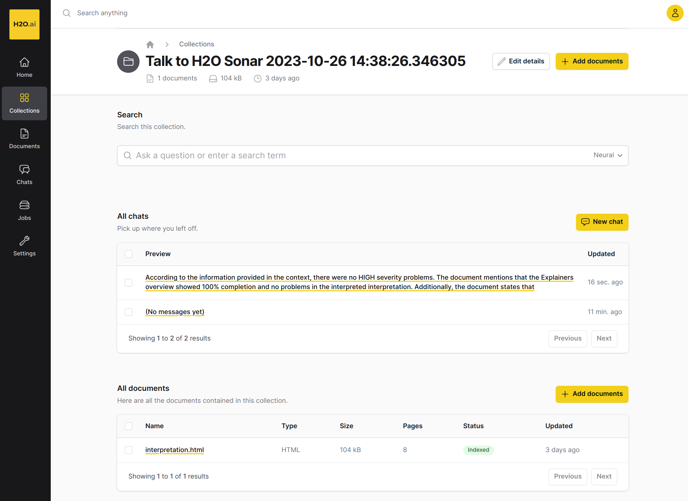

Talk to Report
H2O Eval Studio can upload the interpretation/evaluation results to the Enterprise h2oGPT in order to talk to the report and get answers to questions / use prompts like:
Did the interpretation find any model problems?
Were there any HIGH/MEDIUM/LOW severity problems?
Create an action plan as a bullet list to solve <XYZ> problem.
Create an action plan as a bullet list to solve HIGH SEVERITY problem(s).
Is the model fair?
Which features lead to the highest model error?
Which explainers were run by the interpretation?
Summarize the interpretation report.
Similarly for model understanding:
What is the target column of the model?
Which original features are used by the model?
What is the most important original feature of the model?
What is the most important transformed feature of the model?
What are the 3 most important original features of the model?
What were the columns of the training dataset?
The typical set of questions is typically centered around the model problem(s) and their solutions.

How can you talk to the report?
Run the interpretation.
Upload the interpretation results to the Enterprise h2oGPT - either directly as the last step of the interpretation run or using the API call or CLI command.
Open the Enterprise h2oGPT to chat with the interpretation report.
The API key can be generated in Enterprise h2oGPT web - use Settings - API Keys - New API Key.
For better Enterprise h2oGPT intergration results please install Pandoc (PDF with images will be uploaded instead of HTML).
Talk to Report Python API
Upload the interpretation report to the Enterprise h2oGPT as a part of the interpretation:
# configure Enterprise h2oGPT server connection
H2OGPTE_CONNECTION = h2o_sonar_config.ConnectionConfig(
connection_type=h2o_sonar_config.ConnectionConfigType.H2O_GPT_E.name,
name="H2O GPT Enterprise",
description="H2O GPT Enterprise.",
server_url="https://h2ogpte.h2o.ai",
token=os.getenv(KEY_H2OGPTE_API_KEY),
token_use_type=h2o_sonar_config.TokenUseType.API_KEY.name,
)
h2o_sonar_config.config.add_connection(H2OGPTE_CONNECTION)
# prepare dataset and model to be interpreted
dataset_path = ...
explainable_model = ...
# run interpretation and UPLOAD the results to the Enterprise h2oGPT
interpretation = interpret.run_interpretation(
dataset=dataset_path,
model=explainable_model,
target_col=target_col,
upload_to=h2o_sonar_config.config.get_connection(
connection_key=H2OGPTE_CONNECTION.key
),
)
# print the URL of the uploaded interpretation report
print(
f"Interpretation report uploaded to:\n"
f" {interpretation.result.upload_url}"
)
Alternatively can be (any) interpretation report (PDF or HTML) uploaded to the Enterprise h2oGPT using the API call:
# configure Enterprise h2oGPT server connection
H2OGPTE_CONNECTION = h2o_sonar_config.ConnectionConfig(
connection_type=h2o_sonar_config.ConnectionConfigType.H2O_GPT_E.name,
name="H2O GPT Enterprise",
description="H2O GPT Enterprise.",
server_url="https://h2ogpte.h2o.ai",
token=os.getenv(KEY_H2OGPTE_API_KEY),
token_use_type=h2o_sonar_config.TokenUseType.API_KEY.name,
)
h2o_sonar_config.config.add_connection(H2OGPTE_CONNECTION)
# run interpretation and/or get the interpretation report (PDF or HTML) path
interpretation = ...
# upload the interpretation or interpretation report to the Enterprise h2oGPT
(uploaded_report_collection_id, h2o_gpt_e_collection_url) = interpret.upload_interpretation(
interpretation_result=interpretation,
connection=H2OGPTE_CONNECTION.key,
)
Talk to Report CLI API
First configure Enterprise h2oGPT server connection, for example to h2o-sonar-config.json:
{
"connections": [
{
"key": "4b46c18a-e596-4fa8-8638-055dfd52d37c",
"connection_type": "H2O_GPT_E",
"name": "H2O GPT Enterprise",
"description": "H2O GPT Enterprise server.",
"auth_server_url": "",
"environment_url": "",
"server_url": "https://h2ogpte.h2o.ai",
"server_id": "",
"realm_name": "",
"client_id": "",
"token": {
"encrypted": "gAAAAABlEuFMcWiaK-E3Ccq...m8nUzRZ7UvwRag3DdMrg=="
},
"token_use_type": "API_KEY",
"username": "",
"password": {
"encrypted": ""
}
}
]
}
Then upload the interpretation report to the Enterprise h2oGPT
(identified by connection key 4b46c18a-e596-4fa8-8638-055dfd52d37c)
as a part of the interpretation:
$ h2o-sonar run interpretation \
--dataset dataset.csv \
--model model-to-be-explained.mojo \
--target-col TARGET \
--config-path h2o-sonar-config.json \
--encryption-key my-secret-encryption-key \
--upload-to 4b46c18a-e596-4fa8-8638-055dfd52d37c
Alternatively can be (any) interpretation report (PDF or HTML) uploaded to the Enterprise h2oGPT using the command:
$ h2o-sonar upload interpretation \
--interpretation interpretation-detailed.pdf \
--config-path h2o-sonar-config.json \
--encryption-key my-secret-encryption-key \
--upload-to 4b46c18a-e596-4fa8-8638-055dfd52d37c
See also: